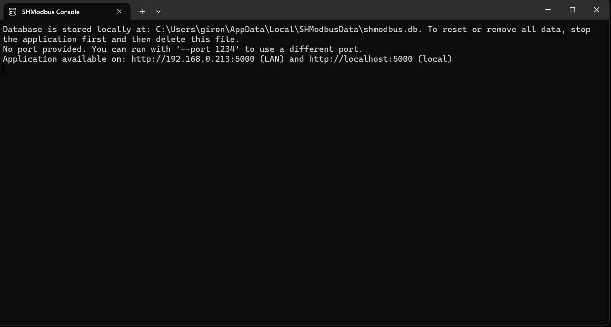
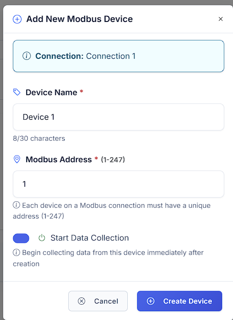

Getting Started with SHModbus ¶
System Requirements ¶
- Operating System: Windows 10/11, Linux
- Browser: Chrome, Firefox, Edge, Safari (latest versions)
- Network: Access to Modbus TCP/IP devices on local network
Installation and Setup ¶
1. Download Application ¶
- Download the latest SHModbus version from the official website: download link
- Choose the correct installation file for your platform:
- SHModbus-V1.0.0-linux-x64.deb: For Linux systems (64-bit Intel/AMD processors) - Debian package
- SHModbus-V1.0.0-linux-arm64.deb: For Linux systems (ARM 64-bit processors, like Raspberry Pi 4) - Debian package
- SHModbus-V1.0.0-win-x64.exe: For Windows systems (64-bit Intel/AMD processors) - Executable installer
- Install the application:
- Windows: Run the
SHModbus-Vx.y.z-win-x64.exeinstaller and follow the setup wizard - Linux (GUI Method): Right-click the
.debfile and select "Package Install"

- Linux (Terminal Method): Install the
.debpackage withsudo dpkg -i SHModbus-V1.0.0-linux-*.deb
2. First Launch ¶
Windows Launch ¶
- Double-click the SHModbus icon on your desktop (not SHModbus Console).

- SHModbus Server Host will open—you should see the main server interface:
- Open your browser and navigate to
http://localhost:5000. - Check the connection—the application should display the main interface.
- Configure devices—add your first Modbus device.
Note: There are two applications available: - SHModbus: Main web-based application (use this one) - SHModbus Console: Command-line version for advanced users
SHModbus Console (Alternative)

For Advanced Users: If you prefer a command-line interface: - Windows: Double-click the SHModbus Console icon on the desktop. - Provides direct command-line access to Modbus operations. - Suitable for automation, scripting, or users who prefer terminal interfaces.
Linux Launch ¶
- Launch from Applications Menu:
- Look for "SHModbus" in your applications menu/launcher.
- Or search for "SHModbus" in your system's application search.
- Alternative—Launch from Terminal:
- Open a terminal and run:
shmodbus. - Or run:
/home/[user_name]/shmodbus. - SHModbus will start—you should see console output:
- Open your browser and navigate to
http://localhost:5000. - Check the connection—the application should display the main interface.
- Configure devices—add your first Modbus device.
Note: After installing the .deb package, SHModbus should be available system-wide and accessible from the applications menu.
3. Command-Line Arguments (Advanced) ¶
Both SHModbus and SHModbus Console applications support command-line arguments for advanced configuration:
Available Arguments ¶
Port Configuration:
- --port 8080 or --port=8080 - Set custom port (default: 5000)
- --urls http://0.0.0.0:8080 or --urls=http://0.0.0.0:8080 - Set custom URLs
Usage Examples ¶
Windows (Command Prompt/PowerShell):
# Launch with custom port
"C:\Program Files\SHModbus\SHModbus.exe" --port 8080
# Launch with specific URLs
"C:\Program Files\SHModbus\SHModbus.exe" --urls http://0.0.0.0:8080
Linux (Terminal):
# Launch with custom port
shmodbus --port 8080
# Launch with specific URLs
shmodbus --urls http://0.0.0.0:8080
Argument Priority ¶
The application uses the following priority order for configuration:
1. --urls argument (highest priority)
2. --port argument
3. ASPNETCORE_URLS environment variable
4. Default port 5000 (lowest priority)
Environment Variables ¶
Windows (PowerShell):
Linux (Bash):
Note: When using --port or --urls arguments, the application will be available on ALL network interfaces (0.0.0.0), making it accessible from other devices on your local network.
Port Configuration ¶
Default Ports:
- Web Interface: http://localhost:5000 (default)
- HTTP API: http://localhost:5000 (same as web interface)
Configuration Methods:
- GUI Configuration (Server Host only):
- In the Server Host interface, click "Configure Ports" (orange button)
- Set your preferred port for the web interface
- Restart the application for changes to take effect
-
Access the web interface at your configured port:
http://localhost:[YOUR_PORT] -
Command-Line Arguments (Both applications):
- Use
--portor--urlsarguments when launching the application - See Command-Line Arguments section above for detailed examples
- This method provides more flexibility and network accessibility options
Note: If port 5000 is already in use, SHModbus will automatically suggest an alternative port during startup.
Configuring Your First Device ¶
Access Web Interface and Login ¶
Once SHModbus is running (either GUI or Console version), you need to access the web interface:
- Open your web browser (Chrome, Firefox, Edge, or Safari)
- Navigate to the application:
- Default URL:
http://localhost:5000 - Custom port:
http://localhost:[YOUR_PORT](if you configured a different port) -
Network access:
http://[YOUR_IP]:[PORT](if launched with--portor--urlsarguments) -
SHModbus Login Page will appear:

Default Login Credentials
Username: admin@admin
Password: admin
These are the default credentials for first-time login. Make sure to change them after your initial setup for security purposes.
-
Enter your credentials and click "Login" button
-
Successful login will redirect you to the main SHModbus dashboard where you can start configuring devices
Note: If you cannot access the web interface, check that:
- SHModbus application is running (check console output or Server Host window)
- No firewall is blocking the port
- The correct port number is being used
- For network access, ensure the application was started with --port or --urls arguments
Step 1: Add Connection ¶
1. Access Connection Management ¶
- In your web browser, navigate to the main SHModbus browser window after successful login
- In the left sidebar, look for the "Configuration" section (gear icon)
- Expand "Configuration" if it's not already open
- Click on "Add Connection" in the sidebar menu
- The Add Connection form will appear in the main content area
2. Fill Connection Details ¶
The "Add New Modbus Connection" dialog will open with the following fields:
Required Fields:
- Connection Name (red asterisk indicates required): Enter a descriptive name (e.g., "Connection 1")
- Character limit: 12/30 characters shown
- IP Address (required): Enter the target device's IP address (e.g., 192.168.1.100)
- Port (required): Specify the Modbus port (default: 502)
Advanced Settings:
- Communication Timeout (ms): Maximum time to wait for device response (default: 5000 ms)
- Failed Request Retries: Number of automatic retry attempts when communication fails (default: 3)
- Connect Automatically: Toggle switch to automatically connect when application starts (enabled by default)
Form Actions: 1. Fill in all required fields (marked with red asterisk ) 2. Configure advanced settings if needed (or keep defaults) 3. Click "Create" button to save the connection 4. Click "Close"* to cancel without saving
3. Create and Verify Connection ¶
- Click "Create" button to save your connection settings
- The dialog will close and your connection will be added to the system
- Check the left sidebar - your new connection should appear under "Configuration"
- Test the connection by expanding it and monitoring the connection status
Example Configuration:
Connection Name: "Main Production Line"
IP Address: 192.168.1.50
Port: 502
Communication Timeout: 5000ms
Failed Request Retries: 3
Connect Automatically: Enabled
Note: After creation, your connection will be available in the Configuration tree where you can manage devices, registers, and monitor real-time data.
Step 2: Add Device ¶
1. Access Device Management ¶
- In the left sidebar, locate your newly created connection (e.g., "Connection 1")
- Check the connection status - you should see a green circle with "0" indicating the connection is active
- Expand your connection by clicking the dropdown arrow next to it
- Click on "Add Device" option that appears under your connection

2. Fill Device Details ¶
The "Add New Modbus Device" dialog will open with the following fields:
Connection Information: - Connection: Shows which connection this device will be added to (e.g., "Connection 1") - This field is read-only and automatically populated
Required Fields:
- Device Name (red asterisk indicates required): Enter a descriptive name (e.g., "Device 1")
- Character limit: 8/30 characters shown
- Modbus Address (required): Set the device identifier (range: 1-247)
- Default value: 1
- Each device on a Modbus connection must have a unique address
Optional Settings: - Start Data Collection: Toggle switch to begin collecting data immediately after device creation - When enabled: "Begin collecting data from this device immediately after creation" - Recommended to keep enabled for immediate monitoring
3. Create Device ¶
- Fill in the Device Name (descriptive name for your device)
- Set the Modbus Address (unique number 1-247 for this device)
- Configure Start Data Collection (recommended: keep enabled)
- Click "Create Device" button to save
- Click "Cancel" to abort without saving
Example Device Setup:
Connection: Connection 1
Device Name: "Temperature Sensor"
Modbus Address: 1
Start Data Collection: Enabled
Important Notes: - Each device must have a unique Modbus Address (1-247) within the same connection - The Start Data Collection feature allows immediate data monitoring after device creation - After creation, the device will appear under your connection in the Configuration tree
Step 3: Add Network Points ¶
1. Access Network Points Configuration ¶
- In the left sidebar, locate your created device (e.g., "Device 1")
- Click on "Device 1" to open the device configuration page
- You'll see "No Network Points Configured" message in the main content area
- The system prompts: "We don't have any network points configured yet. Add your first network point to start collecting data."
2. Add Your First Network Point¶
- Click "Add First Point" button (blue button with plus icon)
- Alternative: Click "Import CSV" if you have existing point configurations to import

3. Configure Network Point Details ¶
The "Add Network Point" dialog will open with the following sections:
Basic Information:
- Point Name (red asterisk indicates required): Enter a descriptive name (e.g., "Enter network point")
- Character limit: 0/30 characters shown
- Register Address (required): Starting register address (e.g., 0)
- Register Type: Select from dropdown (default: "Holding Register")
- Data Type: Select data format (default: "Int16")
Configuration & Settings:
- Scale: Multiply raw value by this factor (default: 1)
- Offset: Add this value to scaled result (default: 0)
- Unit: Measurement unit (e.g., "°C, V" - temperature, voltage)
- Poll Interval: Data collection frequency (default: "Normal")
- Enable Network Point: Toggle switch to activate data collection
- Help text: "Enable this network point for data collection"
Form Actions: 1. Fill in Point Name (descriptive identifier for your data point) 2. Set Register Address (consult your device's Modbus map) 3. Select Register Type (Holding Register, Input Register, etc.) 4. Choose Data Type (Int16, Float32, etc.) 5. Configure scaling and units if needed (optional) 6. Ensure "Enable Network Point" toggle is ON 7. Click "Create Network Point" to save 8. Click "Cancel" to abort without saving
4. Create Network Point ¶
- Fill in Point Name (descriptive identifier for your data point)
- Set Register Address (consult your device's Modbus map)
- Select Register Type (Holding Register, Input Register, etc.)
- Choose Data Type (Int16, Float32, etc.)
- Configure scaling and units if needed (optional)
- Ensure "Enable Network Point" toggle is ON
- Click "Create Network Point" to save
- Click "Cancel" to abort without saving
Example Network Point Setup:
Point Name: "Tank Temperature"
Register Address: 0
Register Type: Holding Register
Data Type: Int16
Scale: 0.1
Offset: 0
Unit: °C
Poll Interval: Normal
Enable Network Point: Yes
5. Verify Data Collection ¶
After creating your first network point: 1. The dialog will close and your point will be added to the device 2. The point appears in the device's network points list 3. Data collection begins automatically (if "Enable Network Point" was ON) 4. Monitor real-time values in the dashboard interface 5. Check connection status and data quality indicators
Important Notes: - Register addresses must match your device's Modbus memory map (check device documentation) - Register Type determines how data is accessed (read-only vs read/write) - Data Type should match how your device stores the information - Scale and Offset allow conversion to engineering units (e.g., raw ADC to temperature) - Poll Interval affects how frequently data is updated - Enable toggle allows you to temporarily disable points without deleting them
Next Steps: - Add more network points to monitor additional parameters from the same device - Use different register types for various data sources - Configure alarms and alerts based on point values - Export point configurations to CSV for backup or replication
Step 4: Test Connection (Diagnostics) ¶
1. Access Diagnostics ¶
- In the left sidebar, locate the "Diagnostics" section (stethoscope icon)
- Expand "Diagnostics" if it's not already open
- Click on "General" to access connection testing tools
- The diagnostics page will display connection status and testing options
2. Connection Testing ¶
Once in the Diagnostics > General section: 1. View connection status for all configured connections 2. Check device connectivity and communication health 3. Monitor network point data flow and quality 4. Review error logs and troubleshooting information
3. Verify System Health ¶
Connection Status Indicators: - Green indicators: Active and healthy connections - Red indicators: Failed or disconnected connections - Yellow indicators: Warning states or intermittent issues
Data Quality Checks: - Real-time data updates: Verify network points are collecting data - Communication timeouts: Check for network issues - Register read/write success: Confirm Modbus operations
4. Troubleshooting ¶
If connections show issues in Diagnostics: 1. Check network connectivity between SHModbus and devices 2. Verify IP addresses and ports in connection settings 3. Confirm Modbus addresses match device configuration 4. Review timeout settings for network conditions 5. Check device documentation for proper register mapping
Common Issues: - Connection timeout: Network latency or device not responding - Invalid register address: Address doesn't exist on device - Wrong data type: Mismatch between configured and actual data format - Network unreachable: IP routing or firewall issues
Note: The Diagnostics section provides comprehensive monitoring and troubleshooting tools for maintaining reliable Modbus communications.
Basic Functions ¶
Real-Time Monitoring ¶
- Data Table: Automatic refresh every 2 seconds
- Real-Time Charts: Trend visualization
- Notifications: Alarms for critical values
Data Management ¶
- Export to CSV: Save historical data
- Filters: Search for specific values
- Sorting: Organize data as needed
Troubleshooting ¶
Connection Issues ¶
- Check IP address of the device
- Verify port (standard 502)
- Check system firewall
- Test ping to the device
Data Issues ¶
- Check register addresses in device documentation
- Verify data type (Int16, Float32, etc.)
- Check device Slave ID
Technical Support ¶
- Online Documentation: Full documentation
- Forum: User community
- Email: contact@iotskyhub.com
- GitHub: Bug reports and suggestions
Need help? Visit the main documentation page or contact our support team.